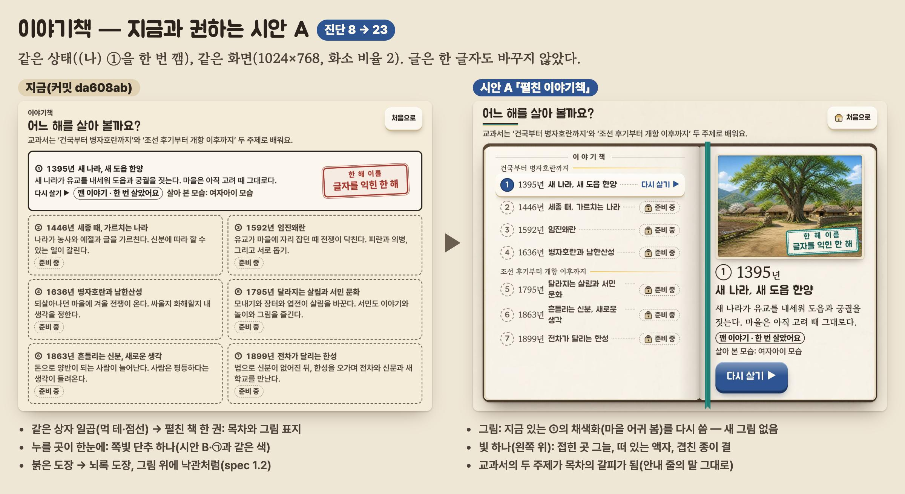
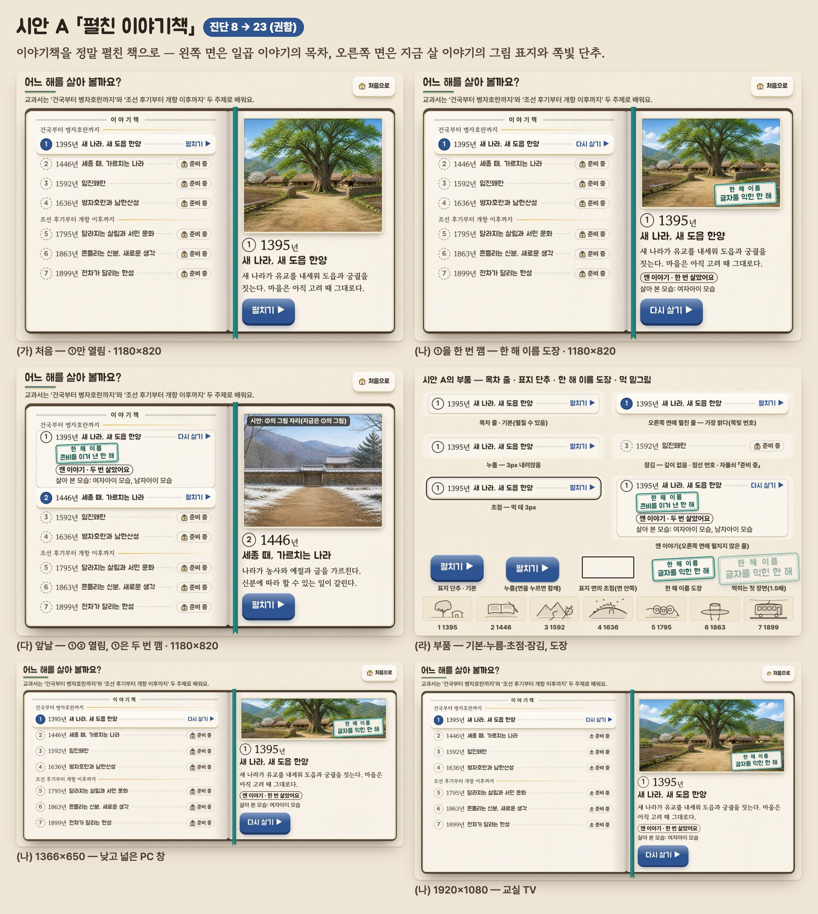
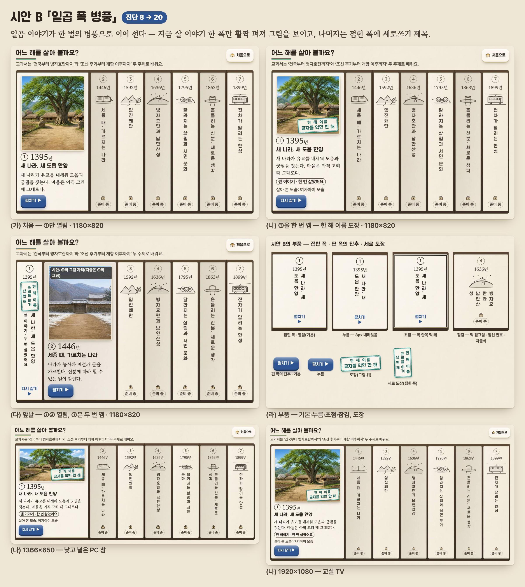
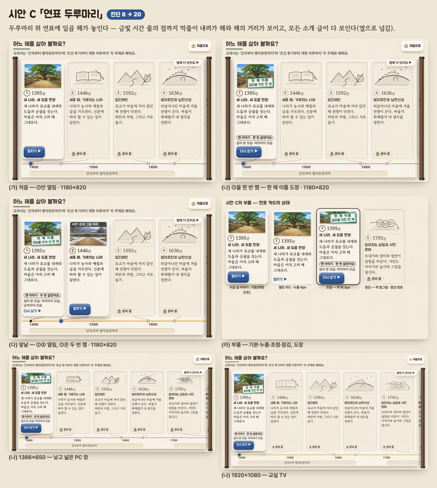

이야기책 — 더 고급스럽게: 시안 셋
지금 화면을 진단표로 매기면 8/24. 시안 A 23 · B 20 · C 20. 권하는 것은 A 「펼친 이야기책」. 계획은 spec.md 12절.
지금과 시안 A

시안 A 「펼친 이야기책」(권함)
(가) 처음(나) ①을 깸(다) 앞날(라) 부품DESIGN.md

시안 B 「일곱 폭 병풍」

시안 C 「연표 두루마리」

보는 법: 저장소 맨 위에서 정적 서버를 띄워 이 쪽을 연다(글꼴·토큰은 게임의 src/styles/를 그대로 부른다). compose.html은 sheet.jpg·before-after.jpg를 찍는 쪽이다.